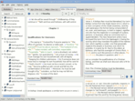

Links
- 
- Xiphos GitHub development website
- Code availability, screenshots, release announcements, issue tracking.
- The SWORD Project
- Application framework, tools and texts for Bible study programs, and mailing lists. Xiphos is based on SWORD and would not exist without it.
- Sword Project Modules
-
Ultimately, what Xiphos is really about is the modules you can plug into it for study. These are what we know can be found.
- Standard modules
- The bulk of the modules available from the Crosswire repository.
- NET Bible
- From bible.org. This is the New English Translation ("NET"; a double entendre: it is the first translation intended to be network-accessible). Both free and for-fee editions are available: The free version has partial footnotes; the for-fee flavor, full (60,000+) footnotes.
bible.org is another repository source defined by default in the Module manager.
A copy of NET Bible in HTML format with full footnotes may be retrieved for free here, suitable for viewing in any browser. - Xiphos Repository
- Xiphos has its own module repository. Initially created for Karl Kleinpaste's modules, it now contains modules from several members of the Xiphos community. This repository is auto-defined in the Module Manager as well. Currently, modules available include:
- Tischendorf Greek NT, 8th ed., edited by Ulrik Petersen, v2.5, with diacritical marks, variant readings, and Strongs and morphology markup
- A custom 2-testament Greek Bible, consisting of LXX OT + TischMorph NT
- Charles Hodge: 4-volume (one module) Systematic Theology (1871-73)
- Finney: Systematic Theology
- Strongs (real) Hebrew and Greek dictionaries (using UTF-8)
- Inverted Strongs Greek and Hebrew dictionaries: Paste real Greek into the dictionary navtext to find nearest equivalent. (Suffers from the limitation that UTF-8 diacritically-marked letters do not sort well.)
- Several non-English, public domain Bibles (Syriac, Coptic, Danish, Italian, Polish, Chinese Pinyin)
- A number of map- and image-based modules
- Updated Websters and Nave modules, providing automatic scripture xrefs and internal topic linking
- A one-year Bible reading plan.
- An updated Gill Expositor
- Highly recommended: The Linux Libertine fonts, particularly for use with Greek or Hebrew texts -- positively beautiful. And they can be installed on any system, including Windows and MacOS.
- Crosswires Wiki reference to repositories
- Recently, Crosswire put up this wiki page for quick mentions of module repositories. (Probably now duplicating much of what is here.)
- Others to be expected...or not
- Some other modules are known to be in progress at this time, but not yet ready for any distribution. Notably, the Sword Project team is working toward completion of a NASB Sword Project module, which will be available for sale from the Lockman Foundation.
- A common request is for a NIV Sword Project module. Regrets, no inquiry to International Bible Society, holder of the copyright for NIV, has ever been fruitful. The only way to get NIV support in Sword Project UIs is via unofficial means using texts available around the Web.
- Also see the Sword FAQ for more information.
- Installation of nonstandard modules
- Standalone modules are packaged as *.zip files. To install such a module:
cd ~/.sword unzip ModuleFileName.zip
This will extract a configuration file into ~/.sword/mods.d, and the data files comprising the content of the module into a subdirectory of ~/.sword/modules.
- CrossWire Bible Society
- Home of the SWORD Project. Check the website for more electronic Bible study-related things.
- BibleTime
- Bible study application for KDE. Also based on SWORD. But it is no secret you can use it under GNOME, too.